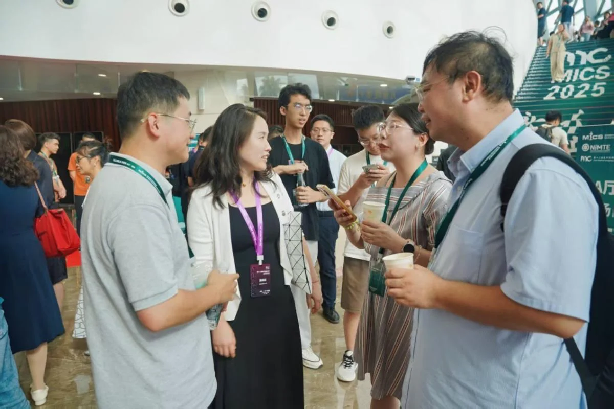
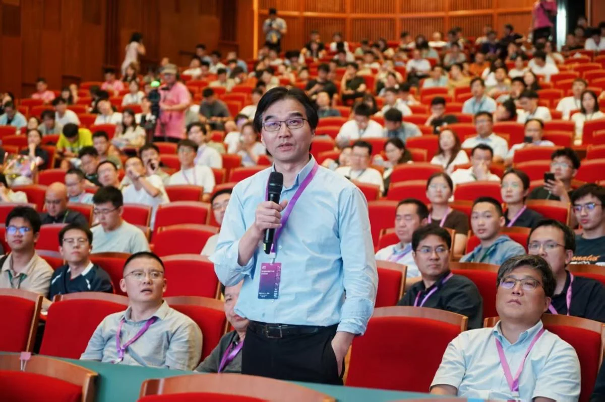
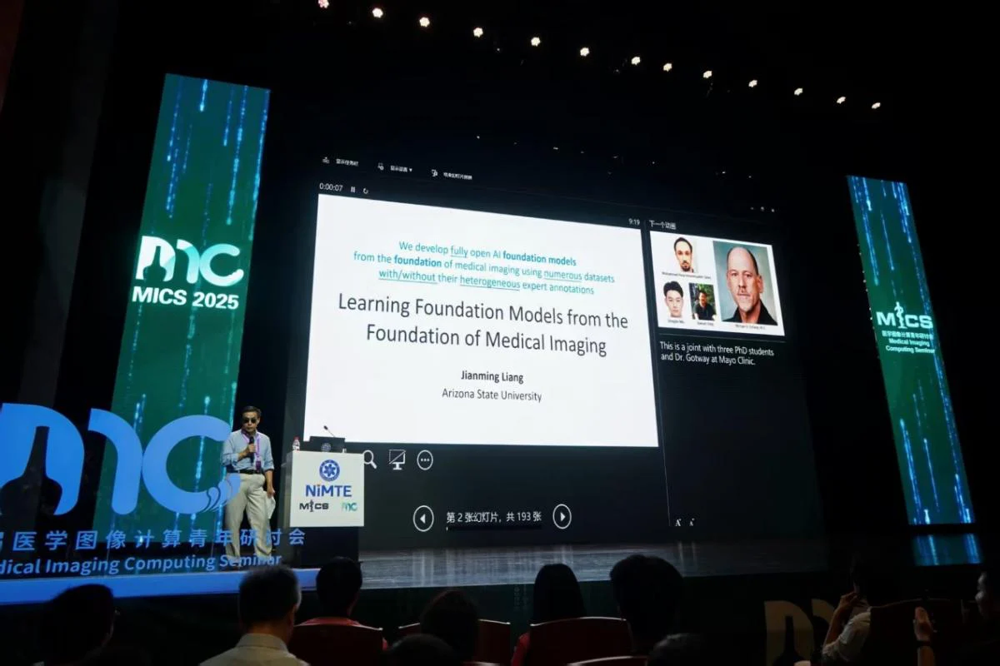

7月18日至20日，第十二届医学图像计算青年研讨会（MICS 2025）在浙江慈溪成功举行。来自高校、科研院所、医疗机构与企业的专家学者齐聚“秘色瓷都”，在盛夏里以思想碰撞与前沿分享，书写一场属于医学影像智能的精彩相逢。本届大会以“激励新一代（Inspire the new generation）”为主题，聚焦青年学者成长与跨界协同，进一步推动“产学研医”的深度融合。

大会在慈溪大剧院拉开帷幕。该会场位于慈溪市中心城区文化商务区，毗邻潮塘江与明月湖，步行即可往返两个分会场，便利而雅致的场域为高密度的学术交流营造了舒适氛围。

7月18日为报到与Tutorial日程。下午，东南大学周毅带来《眼底图像辅诊：迈向可持续可推理基础模型之路》，围绕通用性、可持续与可推理展开深度阐释；随后，来自南京理工大学的张轶哲分享《数据高效与计算高效的医学图像分割》。紧接着，短视频竞赛展示汇报热力登场，青年学者以创意与实践诠释“医学影像+AI”的多元可能，现场掌声与喝彩此起彼伏。

7月19日上午举行开幕式与大会报告。美国亚利桑那州立大学Jianming Liang作题为“Learning Foundation Models from the Foundation of Medical Imaging”的大会报告，系统阐释医学影像基础与基础模型之间的内在逻辑；随后，上海科技大学张寒与山东大学宋然分别就婴幼儿多模态脑成像与“机器人具身智能在智慧医疗中的应用”带来精彩分享，思维与技术在会场内外同频共振。
本届大会由中国科学院宁波材料技术与工程研究所主办，并得到多家单位协办支持；大会由刘江、吴爱国担任主席，赵一天担任执行主席，通力合作、精心组织，确保会议高质量推进。
为扩大传播与共享，组委会同步开放线上直播与资料获取渠道，参会者可通过官方小程序与B站“蔻享学术（MICS_China）”回看精华内容，随时随地重温高光时刻。
三天会期里，特邀报告、跨学科研讨、海报交流与成果展示层层递进，既有对基础理论的系统梳理，也有面向临床与产业的务实探索。明月湖畔、潮塘江边，思想与实践在慈溪大剧院持续发酵，青年学者在“激励新一代”的旗帜下相互成就、彼此点亮。
在热烈而温暖的交流氛围中，MICS 2025圆满收官。期待以本次研讨会为新的起点，携手各方力量，以更开放的视野与更坚定的脚步，推动智能医学影像走向更高水平、更广场景、更深融合的未来。
编辑：王万波